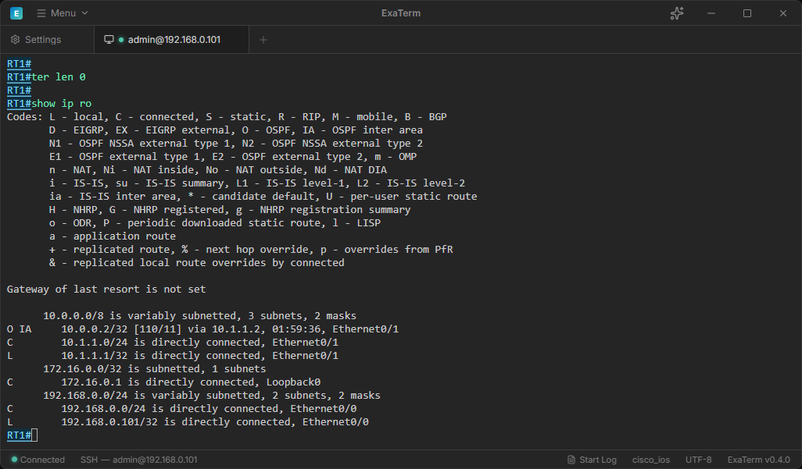

ExaTerm
ExaTermAI agent integration
AI agents such as Claude and Codex can automate terminal operations through the ExaTerm CLI or MCP server.
Terminal software with AI agent support
Connect over SSH, Telnet, or serial on Windows.
How to install
AI agents such as Claude and Codex can automate terminal operations through the ExaTerm CLI or MCP server.
Save frequently used SSH and Telnet connections and open them by profile name.
Highlight terminal output for your device and save session logs manually or automatically.
Run this command in PowerShell on Windows.
winget install caribouhy.ExaTermDownload the installer from GitHub Releases.